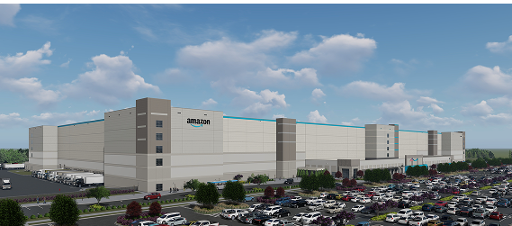

Jeff Bezos entra em processo judicial após a falência da Amazon
Por Giovanni Oliveira, TecScope
Após o colapso financeiro da Amazon, o empresário Jeff Bezos foi formalmente intimado pela Suprema Corte dos EUA em um processo que investiga sua responsabilidade direta pela gestão da empresa nos últimos dois anos. O processo foi iniciado por um grupo de acionistas e ex-funcionários que alegam má conduta administrativa e ocultação de informações financeiras.

A ação judicial envolve acusações de negligência, manipulação contábil e tomada de decisões de alto risco sem consulta ao conselho administrativo. Segundo documentos vazados, Bezos teria aprovado investimentos bilionários em projetos que não passaram por auditoria de viabilidade, incluindo o fracassado sistema de entregas por satélite.
Em nota oficial, a equipe jurídica de Bezos afirma que o empresário agiu “sempre de acordo com os interesses da empresa e dentro da legalidade”. Ainda assim, o caso pode se estender por anos e gerar multas milionárias, além de impactar sua imagem pública e futura atuação no setor de tecnologia.